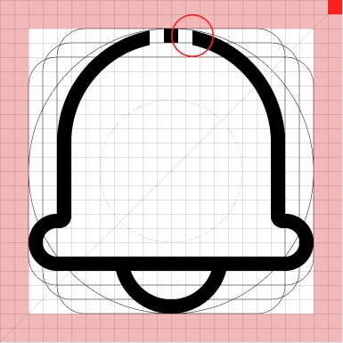

符合真实效果的动画风格
图形源于真实物体效果，并进行适度的动画风格提炼；避免纯粹抽象符号，在保持辨识度的同时呈现出特有的风格表达。
系统图标用于统一功能表达、状态反馈和跨设备识别，确保不同尺寸与表现形式下保持清晰一致。
网格采用 24 × 24 的相对比例，不绑定 pt、dp 或 mm，以基础单位 a 描述全部构造关系。

所有图标优先以正方形网格制作；仅当图形隐喻无法成立时，才使用圆形、垂直或水平特殊网格。
四周保留 2a 安全区域，主体轮廓不得侵入，以保证小尺寸下的识别度。
标准描边为 1a，端点、转角与相交位置保持一致的视觉重量。
断点大小为 1a矩形，断点间距与大小保持一致，断点位置可根据图标视觉比重进行调整。
根据主体形态选择标准、圆形、垂直或水平网格，并统一处理复合语义。
标准
圆形
垂直
水平
辅助符号建议为主符号尺寸的 1/4，默认位于右下角；其面积不得超过主符号的一半，也不得遮挡主体识别特征。
右下角辅助符号
彩色图标以真实物体为基础，通过统一光影、克制色彩和品牌化造型建立温暖、清晰且一致的视觉语言。
图形源于真实物体效果，并进行适度的动画风格提炼；避免纯粹抽象符号，在保持辨识度的同时呈现出特有的风格表达。
所有图标处于统一的光源环境，以一致的光影方向塑造体积感，并建立品牌视觉世界的秩序与真实性。
色彩服务于品牌，通过标准色板传达层次与情感，确保整体和谐并保持品牌独特性。
以活力与简约为核心：光影过渡柔和、造型圆润、色彩明快，传递亲和而有活力的体验。
核心彩色图标以 256 × 256pt 为基准尺寸，并在同一品类中保持统一朝向、角标位置和光影条件。
| 规范维度 | 基准值 | 应用说明 |
|---|---|---|
| 画布与尺寸 | 256 × 256pt | 主体居中并保留稳定安全区 |
| 图形视角 | 四分之三向右视角 | 同一品类使用一致视角，避免其他角度透视效果 |
| 光线与色温 | 右侧柔光 / 中性光 | 高光柔和、明暗自然过渡，避免死黑 |
| 阴影与倒影 | 低强度 / 无倒影 | 阴影仅用于建立体积，不制造悬浮感 |
| 辅助角标 | 右下角 | 位置与比例统一，不遮挡主体识别特征 |
统一采用右侧定向柔光，通过柔和过渡控制不同设计人员或 AI 输出的体积感保持一致。

高光位于物体右侧中上半部分，形态柔和；中间调保持物体固有色。
明暗交界线应自然过渡，反射光可弱化或忽略。
Leader彩色图标的光影对比度约为 30%，阴影以柔光为主，避免死黑。
Leader使用具有透视角度镜头传达清晰、活力的感受，同一品类应保持相同角度的合理透视。

核心视角为四分之三右侧或四分之三俯视视角：主体与空间关系合理，避免明显透视错误。
光影结合透视；同一品类必须采用一致视角。
天气图标用于环境与气象信息表达，应保持统一的光源方向、体积关系、材质细节和色彩层级。每组预留三排，每排 15 个位置。